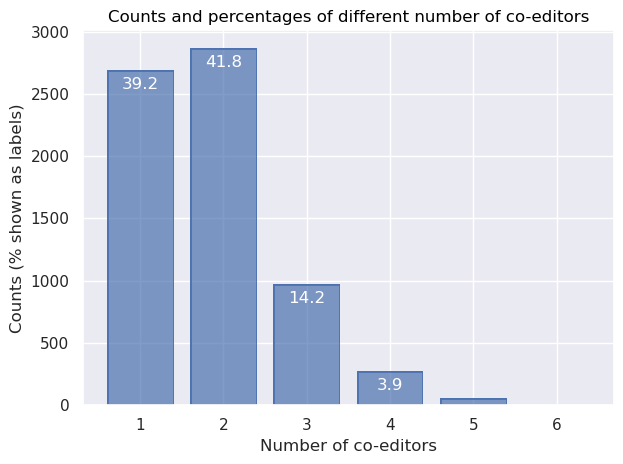

For the time being, only books (including editions) and book sections are considered. Multiple entries of the same edited volume are taken into account only once. This avoids an undue inflation of the number of cases of co-editorship in cases where multiple chapters from the same edited volume are present in the database.
Note that there is a peculiar practice in the French publishing landscape, that of edited volumes that have been edited (‘dirigé’) by one or several people in collaboration with one or several other people (‘avec la collaboration de’). The role of these latter collaborators, whether as scientific co-editors with a slightly lesser degree of responsibility than the main editor, or rather as editorial assistants, is not always clear. In addition, they are sometimes named on the front page, sometimes only in the front matter. Finally, this information is not represented clearly in the dataset at this point, so some caution is advised.
Code
def get_editordata(bibdata): """ Collects data on the titles and editors of all collected volumes for which the dataset includes book sections (like chapters). Simplifies the data to just unique titles of collected volumes with their editors. """# Find all instances of book chapters or book sections xpath ="//bib:BookSection" sections = bibdata.xpath(xpath, namespaces=namespaces)print("There are "+str(len(sections)) +" instances of element 'BookSection'.")# Also, find all instances of books mentioned as a whole and that have editors. xpath ="/rdf:RDF/bib:Book" books = bibdata.xpath(xpath, namespaces=namespaces)print("There are "+str(len(books)) +" instances of element 'book'.") sections.extend(books)print("Overall, there are", len(sections), "publications included at this point.")# For each section (and each book), get the editor(s) and booktitle editordata = {} counter =0for item in sections[:]: counter +=1# Get the editors' last names xpath =".//bib:editors//foaf:surname//text()" editors_last = item.xpath(xpath, namespaces=namespaces) editors_last = [editor for editor in editors_last if"lacollaborationde"notin editor]# Get the editors' first names xpath =".//bib:editors//foaf:givenName//text()" editors_first = item.xpath(xpath, namespaces=namespaces) editors_first = [editor for editor in editors_first if"avec"notin editor]# Combine the names in a concise manner editors = []for last, first inzip(editors_last, editors_first): full = last +"_"+ first editors.append(full)# Get the book titles xpath =".//bib:Book/dc:title//text()"try: booktitle = item.xpath(xpath, namespaces=namespaces)[0]except: booktitle ="missing title number "+str(counter)#print(booktitle) # Only happens less than 10 times, it seems. # Collect each booktitle only once; only last occurrence is kept (!)iflen(editors) >0: editordata[booktitle] = editors# Check results #print("All of the book sections mentioned above correspond to (only)", len(editordata), "different titles of edited volumes.")#ratio = np.round(np.divide(len(sections), len(editordata)),2)#print("This means that, on average, an edited volume is mentioned", ratio, "times, each mention corresponding to one section of the volume being mentioned.")#for title,editors in editordata.items(): # print(editors,title)return editordataeditordata = get_editordata(bibdata)
There are 14421 instances of element 'BookSection'.
There are 23059 instances of element 'book'.
Overall, there are 37480 publications included at this point.
Note that many of the books don’t have editors, because they are monographs. Also, many book sections correspond to different chapters from the same edited volume. Whenever that is the case, the books without editor are discarded and each edited volume is only considered once, in the next step. The total number of publications considered for the co-editor analysis is therefore substantially lower.
Prevalence of co-editor numbers
Based on the data on book titles that have one or several editors, we can now investigate the prevalence of the different numbers of editors books typically have. The following table shows this data.
Code
def get_coeditor_numbers(editordata): """ Based on the editordata, establish the number of times each number of co-editors appears, as well as the corresponding percentages for each number of co-editors. """ coeditors = Counter([len(item) for item in editordata.values()]) coeditors = pd.DataFrame(pd.Series(coeditors, name="count"))#coeditors.drop(0, axis=0, inplace=True) coeditors["percentage"] = np.round(np.multiply(np.divide(coeditors["count"], np.sum(coeditors["count"])),100),1)# Prettify the DataFrame coeditors["number"] = coeditors.index coeditors = coeditors.sort_values(by="number") coeditors = coeditors[['number', 'count', 'percentage']] display(HTML(coeditors.to_html(index=False)))return coeditorscoeditors = get_coeditor_numbers(editordata)
number
count
percentage
1
2730
39.8
2
2847
41.5
3
966
14.1
4
259
3.8
5
49
0.7
6
5
0.1
10
1
0.0
The following visualization shows counts and percentages for different numbers of co-editors.
Code
def visualize_coeditor_numbers(coeditors): """ Create a simple bar plot that shows the percentage of each number of co-editors in the dataset. """ coeditors = coeditors.iloc[:-1,:]import seaborn.objects as so ( so.Plot(data=coeditors, x="number", y="count", text="percentage") .add(so.Bar()) .add(so.Text(color="w", valign="top", offset=5)) .scale(x=so.Continuous().tick(every=1)) .label( x="Number of co-editors", y="Counts (% shown as labels)", title ="Counts and percentages of different number of co-editors") .save("figures/coeditor-percentages.svg", dpi=300) .show() )visualize_coeditor_numbers(coeditors)

Compared with the data on co-authorship (of books, articles and chapters), the figure above shows that co-editorship works quite differently. Indeed, when looking at editorship (of edited volumes or editions), joint editorship with two editors is the most common case (with almost 42% of the cases). Single editorship, however, is only slighly less widespread (at 39%). Triple co-editorship is also not uncommon, though clearly at a much lower level (at around 14%).
It could be interesting to distinguish between editorship of edited volumes on the one hand, and textual editions, on the other hand. This is future work, because the dataset does not distinguish these two publication types at the moment.
Coeditor pairs
This section looks at which people have frequently collaborated as editors of edited volumes and/or editions. The table below shows the 10 most active pairs of editors.
Code
import warningsimport pandas as pdfrom pandas.core.common import SettingWithCopyWarningwarnings.simplefilter(action="ignore", category=SettingWithCopyWarning)def get_recurring_coeditors(editordata, topn): """ Which people have frequently collaborated as editors? This is based on the data collected above (editors of unique titles). """# Define filenames for output. coeditorcounts_top_file = join("results", "coeditor-counts_top.csv") coeditorcounts_full_file = join("results", "coeditor-counts_full.csv")# Get editor names from editordata. coeditors = editordata.values()print("Overall,", len(coeditors), "publications with editors are considered here.") coeditor_names = [item for sublist in coeditors for item in sublist]print("Also, there are", len(set(coeditor_names)) , "different editors represented in the data.")# Establish the count of each collaboration between editorsimport itertools all_coeditor_combinations = []for item in coeditors: coeditor_combinations =list(itertools.combinations(item, 2)) coeditor_combinations = [tuple(sorted(item)) for item in coeditor_combinations]for coedcomb in coeditor_combinations: all_coeditor_combinations.append(coedcomb) ccc =dict(Counter(all_coeditor_combinations)) # ccc = coeditor_combinations_count# Transform to a DataFrame ccc = pd.DataFrame.from_dict(ccc, orient="index", columns=["count"]) ccc = ccc.reset_index() ccc_split = pd.DataFrame(ccc["index"].tolist()) ccc_merged = ccc_split.merge(ccc, left_index=True, right_index=True) ccc = ccc_merged.drop(["index"], axis=1) ccc = ccc.rename({0 : "coeditor1", 1 : "coeditor2"}, axis=1) ccc = ccc.sort_values(by="count", ascending=False)#print(ccc.head())#print(ccc.shape, "shape of dataframe")withopen(join(coeditorcounts_full_file), "w", encoding="utf8") as outfile: ccc.to_csv(outfile, sep=";")# Filter the DataFrame to make it manageable for visualization# Determine the top N most frequent co-editors coeditors_top =list(set(list(ccc.head(topn).loc[:,"coeditor1"]) +\list(ccc.head(topn).loc[:,"coeditor2"])))#print(coeditors_top)print("Among all editors, "+str(len(coeditors_top)) +" have been selected as the most active co-editors.")print("In the following analysis, all editors they have collaborated with, however, are included.")# Filter the DataFrame to include just the collaborations involving at least one of the top co-editors. # The resulting DataFrame will have all collaborations between the top co-editors and their co-editors. ccc_filtered = ccc[(ccc["coeditor1"].isin(coeditors_top)) |\ (ccc["coeditor2"].isin(coeditors_top))]#print(ccc_filtered.shape, "shape of dataframe of top co-editors and their co-editors.")# Simplify the labels #ccc_filtered = ccc_filtered.replace(' .*?]', '',regex=True).astype(str) ccc_filtered.loc[:,'coeditor1'] = [re.sub(r', .*','', str(x)) for x in ccc_filtered.loc[:,'coeditor1']] ccc_filtered.loc[:,'coeditor2'] = [re.sub(r', .*','', str(x)) for x in ccc_filtered.loc[:,'coeditor2']]# Display this as a formatted table display(HTML(ccc_filtered.head(10).to_html(index=False)))# Save to disk withopen(join(coeditorcounts_top_file), "w", encoding="utf8") as outfile: ccc_filtered.to_csv(outfile, sep=";")return ccc, ccc_filteredccc, ccc_filtered = get_recurring_coeditors(editordata, topn=150)
Overall, 6857 publications with editors are considered here.
Also, there are 7151 different editors represented in the data.
Among all editors, 208 have been selected as the most active co-editors.
In the following analysis, all editors they have collaborated with, however, are included.
coeditor1
coeditor2
count
Herman_Jan
Pelckmans_Paul
24
Hasquin_Hervé
Mortier_Roland
18
Biard_Michel
Leuwers_Hervé
12
Biard_Michel
Bourdin_Philippe
11
Berchtold_Jacques
Porret_Michel
9
Bourdin_Philippe
Leuwers_Hervé
8
Peeters_Kris
Pelckmans_Paul
8
Herman_Jan
Peeters_Kris
8
Didier_Béatrice
Neefs_Jacques
7
Berchtold_Jacques
Martin_Christophe
7
Co-editor network
Based on the frequency of co-editorships, it is possible to draw a network representation.
The network visualization shows the editors as nodes, with their weighted degree determining the node size (the more publications they have edited with together with someone else, the larger the node). And it shows the intensity of their collaboration as the edges, with the number of coedited volumes determining the edge thickness (the more publications two editors have collaborated on, the thicker the line between them). The network layout aims to show groups of people who belong to a sub-network of co-editors who, as a group, work together frequently.
Code
def create_plot(ccc_filtered): """ Plot the co-editor data as a network using pyvis. """# Prepare the dataset cccf = ccc_filtered cccf.rename(columns={"count": "weight"}, inplace=True) cccf = cccf[cccf["weight"] >0] # for filtering, with "0", all items remain# Load the data into a NetworkX graph net = Network('1600px', '2800px', notebook=True, cdn_resources='in_line') G = nx.Graph()for line in cccf.iterrows(): #print(line[1][0], end="\n") G.add_edge(# full names line[1][0], line[1][1],# last names only#re.split("_", line[1][0])[0],#re.split("_", line[1][1])[0], weight=line[1][2], title=line[1][2], ) degrees =dict(G.degree) degrees.update((x, ((y*50)**0.5)) for x, y in degrees.items()) nx.set_node_attributes(G, degrees, 'size') print("The network includes a total of", str(nx.number_of_nodes(G)), "editors.")# Plot the data using pyvis net.from_nx(G) net.toggle_physics(True) net.show("figures/coeditor-network.html")create_plot(ccc_filtered)
The network includes a total of 618 editors.
figures/coeditor-network.html
This data can be visualized as a network. Click on the following image for an interactive network plot.
When interpreting the data, please note that (a) the number of key editors selected and (b) the minimum number of collaborations are important parameters of this network. If all editors are included, and/or single collaborations are retained, the network becomes unwieldy (and the graph loads slowly). However, the number of sub-networks, and their degree of connectivity among each other, varies strongly when these parameters are modified.
The current network uses a total of 618 editors (all 208 editors included in the top-150 editor pairs and all editors connected to them), and does not filter out any rarer collaborations. That’s only around 10% of the total number of editors in the dataset, but at this setting, the network remains readable and already loads quite slowly.
coeditor network
The visualization shows, like the tabular display, that Herman and Pelckmans (with 24 co-edited volumes they collaborated on!) and Hasquins and Mortier (with 18 edited volumes) are the most intense collaborators in terms of co-editorship.
More interestingly, however, the network visualisation shows that there are multiple, independent co-editor networks. Some are star-shaped and dominated by one editor working with many different co-editors (like the sub-networks around Grande or Seth). A few are dominated by a binary relationship (like the ones around Neefs and Didier, Hersant et Ramond, Plagnol-Diéval and Cook, or the one made up of Mortier and Hasquin). Others involve a triangular relationship (like the ones involving Herman, Pelckmans, Peeters; or the one with Bourdin, Biard, Leuwers). The unconnected sub-network formed by five co-editors (Bouvier, Brunat, Kohlhauer, Barthélémy, Clerc) is an interesting case of a small but tight and independent co-editor network.
In addition, many of these sub-networks are loosely connected between each other, while others are entirely disconnected from the main network. And some co-editors serve as connections between several sub-networks. This depends the most, however, at least in my experience, on the number of editors considered and would be best analyzed statistically on the entire network by way of determining nodes with a high betweenness centrality (rather than degree centrality).
An additional look at the graph data
Based on the data modeled as a graph, we can not only visualize it, but also extract some additional information. This is done here for the entire dataset, not just the top coeditors as in the visualization.
This essentially shows that, while some editor pairs have worked together particularly frequently (think Herman and Pelckman or Hasquin and Mortier above), they are not necessarily the ones who have engaged in the most co-editorships overall. Lüsebrink and Porret are clearly the people who have engaged in the most co-editor relationships (i.e., cumulated number of co-editors involved in all volumes they co-edited).
We can also check, as mentioned above, for betweenness centrality of the editors, in order to identify those editors (in the entire graph) that tend to connect otherwise weakly-connected sub-networks.
Code
def calculate_measures(ccc): # Prepare the dataset ccc.rename(columns={"count": "weight"}, inplace=True) ccc = ccc[ccc["weight"] >0] # for filtering (0 is slow but complete)# Load the data into a NetworkX graph G = nx.Graph()for line in ccc.iterrows(): G.add_edge( line[1][0], line[1][1], weight=line[1][2], )print("Number of editors included in this Graph: "+str(nx.number_of_nodes(G)) +".")# Get the degrees dg =dict(G.degree)# Get the betweenness centralities# See: https://networkx.org/documentation/stable/reference/algorithms/generated/networkx.algorithms.centrality.betweenness_centrality.html bc = nx.betweenness_centrality( G, k=None, normalized=True, weight=None, endpoints=False, seed=None )# Get eigenvector centrality ec = nx.eigenvector_centrality( G, max_iter=100, tol=1e-03 )# Merge results into a dataframe dg = pd.DataFrame.from_dict(dg, orient="index", columns=["degree"]) dg["coeditor"] = dg.index bc = pd.DataFrame.from_dict(bc, orient="index", columns=["betweenness"]) bc["coeditor"] = bc.index ec = pd.DataFrame.from_dict(ec, orient="index", columns=["eigenvector"]) ec["coeditor"] = ec.index#measures = dg.merge(ec, how="inner", on="coeditor") measures = dg.merge(bc, on='coeditor').merge(ec,on='coeditor') measures = measures[["coeditor", "degree", "betweenness", "eigenvector"]]return measuresmeasures = calculate_measures(ccc)
Number of editors included in this Graph: 5857.
Now we can look at the various graph measures calculated above on the entire network of editors.
First, the editors with the highes value for degree (number of connections). This describes the total number of co-editorships a given person has engaged in.
Similarly, we can look at the betweenness centrality. This is a measure that describes how much an editor acts as a connection between various subnetworks. “Betweenness centrality quantifies the number of times a node acts as a bridge along the shortest path between two other nodes”, as per Wikipedia.
The eigenvector centrality is interesting because it surfaces editors who do not necessarily have very high degree or betweenness centrality scores, like Pierre Hébert. It remains to be seen what exactly this says about them!